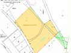

Katastervermessung
Rechtlich relevante Vermessungen rund um Eigentum an Grund und Boden.
Dies betrifft rechtlich relevante Vermessungen in Zusammenhang mit Eigentum an Grund und Boden. Dazu gehören Grenzvermessungen wie die Rekonstruktion unkenntlich gewordener Grenzen, weiters die Überprüfung vorhandener Grenzzeichen vor Bauarbeiten oder die Übertragung eines Grundstückes in den rechtsverbindlichen Grenzkataster.
In das Gebiet der Katastervermessung fällt auch die Erstellung von Planentwürfen und Plänen für eine beabsichtigte Grundteilung und Bauplatzschaffung, sowie Grundlagenpläne für die Parifizierung von Liegenschaften. Die Ergebnisse dieser Vermessungen liegen meist in Form einer öffentlichen Urkunde vor.
Als allgemein beeideter und gerichtlich zertifizierter Sachverständiger für Geodäsie erstellen wir auch Gutachten im Auftrag der Justiz oder privater Personen.
